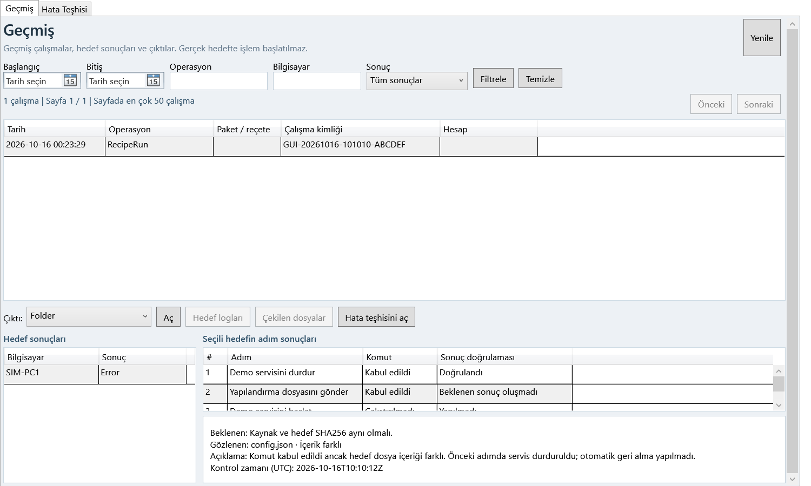

RemoteOps v28
# v28 — Sonuç doğrulama ve hafif test raporu
16 Ekim 2026 · YD_RemoteOps.App_v28 · Temel sürüm: v27
## Yeni davranış
Servis başlat/durdur/yeniden başlat ve başlangıç türü değişikliğinden sonra hedef yeniden okunur. Registry düzenlemede gerçek tür ve değer tekrar okunarak karşılaştırılır; silmede doğrulanmış yokluk aranır. Dosya gönderiminde kaynak önceden özetlenir; sonrasında kaynak sabitliği, hedef dosya SHA256 içerikleri ve klasör varlığı/türü kontrol edilir. Kaynak özeti alınamıyorsa gönderim başlatılmaz. Bağlantı/junction kapsamları doğrulanmış sayılmaz. Kapsam dışı hedef dosyaları karşılaştırılmaz.
Ham komut sonucu korunur. CommandStatus ve VerificationStatus, beklenen/gözlenen durum, açıklama ve UTC zamanı ayrıca kaydedilir. Komut başarısızsa veya kopyada öğe atlandıysa doğrulama yapılmaz. Servis geçişi için 30 saniyelik bekleme penceresi, her uzak okuma için ayrıca 10 saniyelik sağlayıcı sınırı vardır.
Reçetede farklı sonuç Error, kesinleştirilemeyen sonuç Indeterminate üretir; sonraki adımlar NotRun olarak kaydedilir. Diğer hedefler devam eder. Otomatik yeniden deneme veya geri alma yapılmaz. Önceki işlemlerin sonuçları korunur. Geçmiş ekranı komut yanıtı ile doğrulamayı ayırır; seçili adımın beklenen/gözlenen durumu, açıklaması ve zamanı gösterilir. HTML'de okunabilir adım tablosu vardır; CSV ve özgün kanıtlar korunur.
Recipe/1–4 biçimleri, özel/otomatik adlar ve koşul grupları değiştirilmez. Eski ortak koşul bir kez değerlendirilir. Eski başarı kayıtları geriye dönük doğrulanmış gösterilmez. Paket ve yedekleyerek silmenin önceki kontrolleri korunur. Runtime/AppData yolları değişmez. Önceki v27 klasörü ve ZIP korunur.
## Son doğrulama
| Kontrol | Sonuç |
|---|---|
| Seçilmiş güvenli yerel regresyon dosyaları | 22/22 geçti |
| Durumu değişen SIM modeliyle operasyon senaryoları | 19/19 geçti |
| Kalıcı çalışma / CSV / checkpoint / ledger kontrolü | 18 çalışma geçti |
| Değiştirilmiş kanıtı reddeden negatif kontrol | 2/2 geçti |
| Model sınırı negatif kontrolü | 5/5 geçti |
| PowerShell sözdizimi | 136 dosya, 0 hata |
| Gerçek WPF sonuç seçimi, ayrıntı ve sütun görünürlüğü | Geçti; son görsel kaynaklarla ayrıca tekrarlandı |
| Beklenmeyen sınır ihlali | 0 |
| Operasyon kabul süresi | 203.85 saniye |
| Örneklenen toplam çalışma belleği | 687.1 MiB |
Sanal makine kullanılmadı. Bellek değeri örneklemedir, kesin üst sınır değildir.
## Kapsam ve sınırlar
Servis senaryolarında gerçek WPF oluşturma/kaydetme/açma/önizleme/onay ve ayrı koordinatör/çocuk yürütücü süreçleri çalıştı. Uzak servis ve registry koşulu sınırı yerel durum modeliyle değiştirildi. Registry son durum karşılaştırmaları türleri tanımlanmış yerel okuma fikstürleriyle; dosyalar gerçek geçici yerel dosyalar, klasörler ve junction'lar üzerinden SIM hedef eşlemesiyle sınandı. Registry DWORD/QWORD, çoklu metin, ham genişletilebilir metin ve tür koruma; dosya bozulması, kaynak değişimi ve eksik boş klasör kontrolleri kapsamdadır.
Gerçek servis, registry veya uzak dosya değiştirilmedi. Gerçek ağ, Windows sağlayıcısı, domain, DCOM, SMB/PsExec ve EDR doğrulanmış değildir. Ağ yakalama veya işletim sistemi güvenlik duvarı yalıtımı iddiası yoktur. Yalnızca belirtilen güvenli 22 dosya ve 19 senaryo çalıştırılmıştır; tüm tarihsel test dosyaları koşulsuz çalıştırılmamıştır.
İlk geliştirme turunda bağımsız kayıt kontrolündeki demand/Manual ad eşlemesi eksikti; gerçek kayıtlardan neden belirlenip düzeltildi. Son tur tüm kontrollerden geçti. Geliştirme kanıtları run-01, son teslim kanıtı final altındadır. Bağımsız incelemede bulunan kaynak atası ve hedef kökü junction boşluğu, önce başarısız olan yerel testle yeniden üretilip kapatıldı. Özgün hata ayrıntısının genel adım açıklaması altında kaybolmaması da testle doğrulandı.
## Kanıtlar ve tekrar çalıştırma
- [Makine tarafından okunabilir özet](V28_TEST_SUMMARY.json)
- [Son operasyon kanıtı](v28-validation/final/acceptance/summary.json)
- [Regresyon sonuçları](v28-validation/final/regression.csv)
- [Bağımsız kod incelemesi](V28_CODE_REVIEW.json)
- [PDF kontrolü](V28_PDF_QA.json)
Kökte HAFIF_TEST_CALISTIR.bat güvenli regresyonları, SIM kabul testlerini ve kalıcı kayıt kontrolünü tekrar çalıştırır. Çıktılar TestResults/Offline altına yazılır. Windows PowerShell 5.1 kullanılır.

